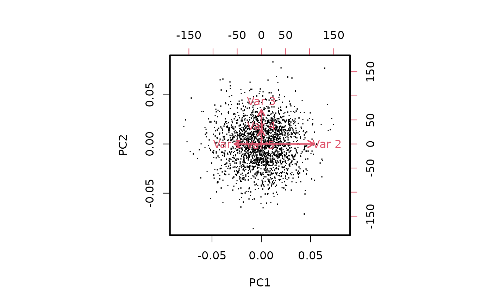

S2a: Elements of PCA
Vincent J. Carey, stvjc at channing.harvard.edu
January 09, 2025
Source:vignettes/S2a_PCAelem.Rmd
S2a_PCAelem.RmdOverview
This vignette explores basic aspects of PCA in bivariate and 5-dimensional data. It concludes with some remarks about “eigengenes”, which can be verified using the computations shown in the simpler cases.
Make a bivariate dataset with positive correlation and heterogeneous variance
First we create a covariance matrix with greater variance for second variable of our pair.
## [,1] [,2]
## [1,] 1 1
## [2,] 1 4Then we generate a 20000 x 2 matrix of bivariate normal deviates.
## [,1] [,2]
## [1,] 1.002 0.995
## [2,] 0.995 3.973
cor(sim1)## [,1] [,2]
## [1,] 1.000 0.499
## [2,] 0.499 1.000The data in the original units is easy to visualize:
Now we will perform a PCA. We don’t have to reduce dimensions, but we can get a handle on how the components are formed and interpreted.
PC1 is produced by taking linear combinations of the rows of sim1.
We’ll illustrate the linear combination concept. The data vector for the first row may be written \((x_1, x_2)\), and a linear combination has the form \(ax_1 + bx_2\) for some coefficients \(a\) and \(b\).
The coefficients are derived from the rotation component of the PCA.
prc$rotation## PC1 PC2
## [1,] 0.291 0.957
## [2,] 0.957 -0.291
c11 = prc$rotation[1,1]
c21 = prc$rotation[2,1]
sim1[1,1]*c11 + sim1[1,2]*c21## PC1
## -2.5
prc$x[1,1]## PC1
## -2.5This can be done wholesale using matrix multiplication %*%:
(sim1 %*% prc$rotation)[1:5,]## PC1 PC2
## [1,] -2.502 1.412
## [2,] 0.576 0.797
## [3,] 2.250 0.539
## [4,] -4.866 -0.213
## [5,] 0.891 1.017
prc$x[1:5,]## PC1 PC2
## [1,] -2.502 1.412
## [2,] 0.576 0.797
## [3,] 2.250 0.539
## [4,] -4.866 -0.213
## [5,] 0.891 1.017## [1] TRUEExercises.
Recover the value of
prc$x[1,2]using the second column ofprc$rotation.Examine these plots
par(mfrow=c(2,2), mar=c(4,4,3,1))
plot(sim1, xlim=c(-10,10), ylim=c(-10,10), main="raw data",
xlab="data column 1", ylab="data col. 2")
plot(sim1 %*% prc$rotation, xlim=c(-10,10), ylim=c(-10,10),
main="data %*% prc$rotation", xlab="PC1 via rotation",
ylab="PC2 via rotation")
plot(prc$x, xlim=c(-10,10), ylim=c(-10,10), main="x from prcomp",
)
plot(sim1 %*%
prc$rotation %*% t(prc$rotation), xlim=c(-10,10), ylim=c(-10,10),
main="data %*% rot %*% t(rot)", xlab="data %*% VVt (col 1)",
ylab = "data %*% VVt (col 2)")The rotation has been “undone”. Letting \(V\) denote the ‘rotation’ component of the PCA, this shows that the matrix product \(VV^t = I\), where \(I\) is a diagonal matrix with 1 on the diagonal. More background on the underlying computations can be gleaned from the Wikipedia entry on singular value decomposition.
A larger covariance matrix
Here we have a 5-dimensional dataset. We set up the covariance matrix so that columns 1 and 2 have negative correlation, columns 3 and 4 have positive correlation, column 2 has greatest overall variance, and columns 1 and 3 have elevated variance.
cm = diag(5)
cm[3,4] = cm[4,3] = .8
cm[1,2] = cm[2,1] = -.6
A = diag(5)
A[1,1] = 2
A[2,2] = 3
A[3,3] = 2
covm = A%*%cm%*%A
myd = mvrnorm(2000, rep(0,5), covm)The pairs plot shows the data in original units.
We verify the multivariate structure:
cor(myd)## [,1] [,2] [,3] [,4] [,5]
## [1,] 1.00000 -0.61123 -0.00337 0.01546 0.0489
## [2,] -0.61123 1.00000 -0.00105 0.00686 -0.0348
## [3,] -0.00337 -0.00105 1.00000 0.80438 -0.0361
## [4,] 0.01546 0.00686 0.80438 1.00000 -0.0365
## [5,] 0.04888 -0.03478 -0.03611 -0.03648 1.0000
cov(myd)## [,1] [,2] [,3] [,4] [,5]
## [1,] 4.1482 -3.88159 -0.01360 0.0317 0.0986
## [2,] -3.8816 9.72168 -0.00648 0.0215 -0.1075
## [3,] -0.0136 -0.00648 3.91911 1.6017 -0.0708
## [4,] 0.0317 0.02153 1.60174 1.0118 -0.0364
## [5,] 0.0986 -0.10745 -0.07082 -0.0364 0.9816
dim(myd)## [1] 2000 5Compute PCA
The biplot shows the projection to PC1-PC2 and shows how the different variables are related, and how they drive the projection.

Exercise: Explain the configuration of arrows in the biplot.
“Eigengenes” derived from PCA
When the rows are samples and columns are genes, the x components of prcomp’s output are linear combinations of all genes. The coefficients of the combination are derived from the PCA rotation matrix, which is constructed so as to
- order the PCs so that the components capturing the most variation come first
- construct the PCs so they are mutually orthogonal
Note that the simple reconstructions above have required that prcomp be used with center=FALSE.